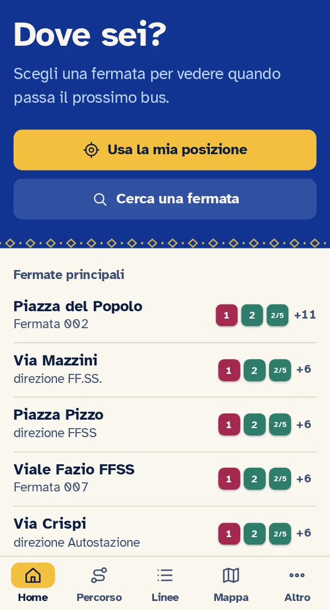
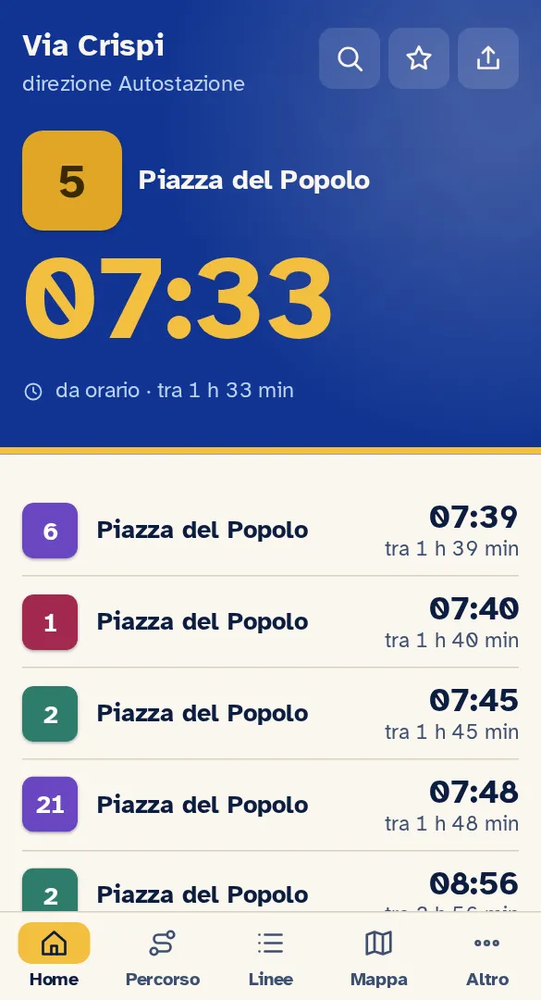
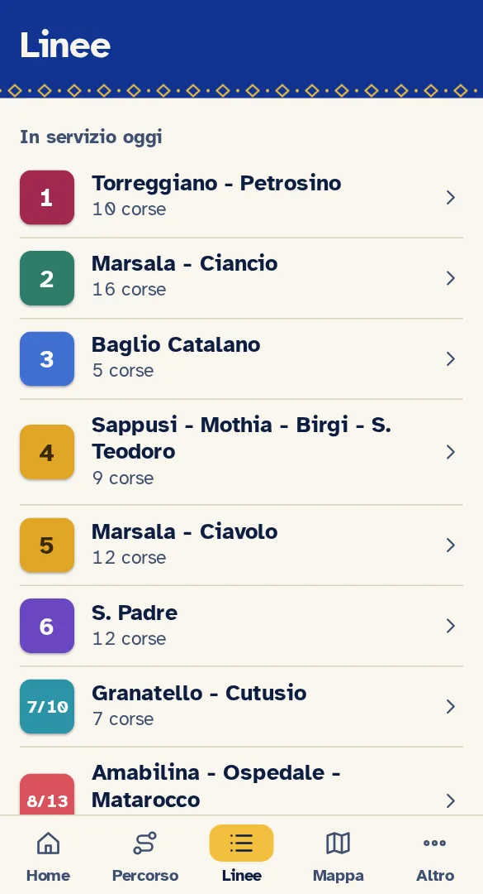
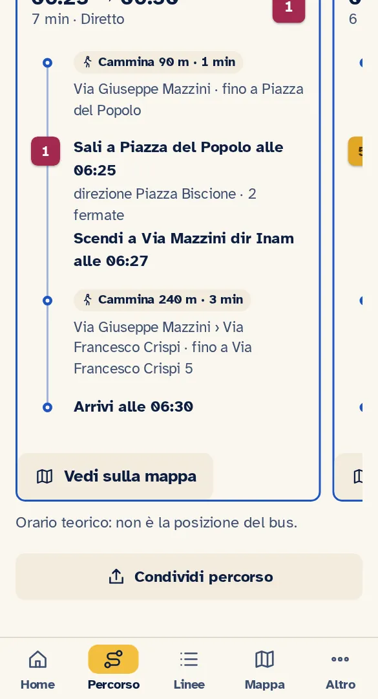
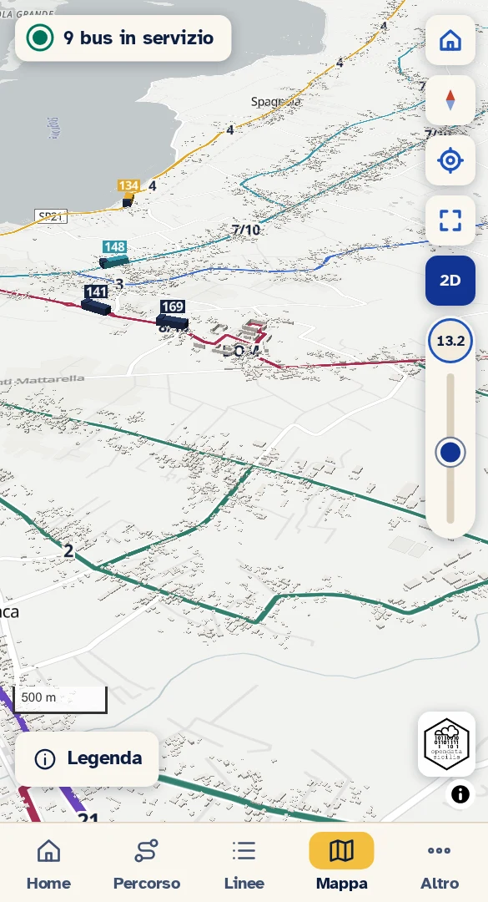

Tocca «Usa la mia posizione» o cerca una fermata per nome.

I minuti di attesa per ogni linea che passa da lì.

Tutte le linee in servizio oggi, con il numero di corse.

Dove salire e scendere. Condividi con un tocco.

Vedi i bus muoversi sulla mappa 3D, in diretta. Orari anche offline.